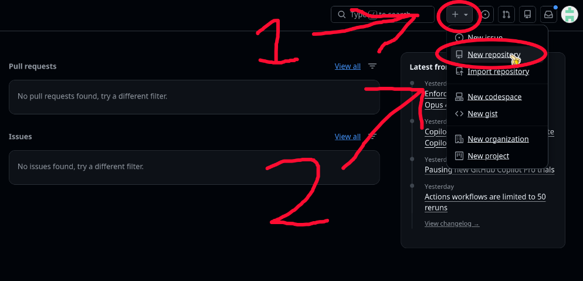
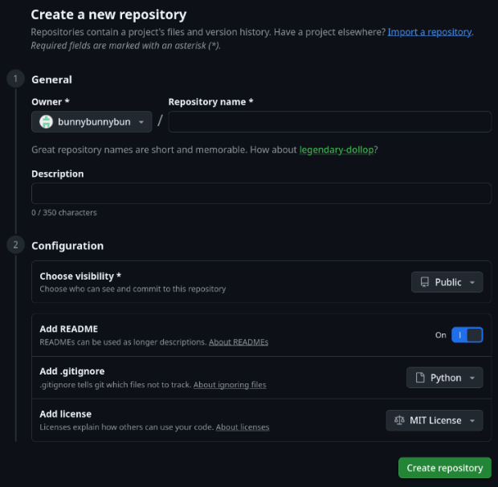

This will teach you the very basics of Python! Python is a very popular programming language, and it's widely considered to be one of the best languages for beginners to learn how to code! Before we start with Python though, we need to setup Githubⓘ.
First of all, what is Git, and why do we need it? To start, Git and Github are 2 different things. Git is a tool for managing your code projects. You store each of your projects in a repository, and whenever you make an update to your project, you can "commit" the changes to the repository. Git will keep a history of every change you have made, so that in case your update accidentaly broke something, you can easily undo your changes! Now, Github is a free service by Microsoft that allows you to host your Git repository -- which has all of your code -- in the cloud, which makes it easy to access your code from anywhere. It also makes sharing and collaborating on projects much easier, and serves as a backup in case your computer breaks and you lose all of your code (This has happened to me 😞... back up your stuff!) Git is used all the time by programmers, and using it is an essential skill to learn.
First up... Make an account! Go to github.com and sign up for an account (it's free, don't worry).
Now, create a new repository, like so:

Choose a name for your repository, and a short description. Set visibility to public and add README to on. For the "Add .gitignore" option, set it to Python. It's okay if you don't know what .gitignore is! It's not very important right now. And lastly, you can optionally set a license. You can use any license you want, or none at all, but do know that if you don't set a license, then nobody is allowed to use and improve upon your code in their own projects. I personally like to use an open source license, such as the MIT License, which allows others to use my code in their projects if they wish.

So you have a repository on Github, but you also need to have Git installed on your computer. To install it, follow the instructions on the Git website here. The installer might have a ton of settings to change. It should be fine to leave the settings on the default values.
After you've installed Git, you need to clone the repository that you made on Github onto your computer. This will let you do the coding in the local repository (the copy on your computer), and then synchronize your code onto the repository on Github (this action is referred to as "pushing" your code to Github) whenever you make a significant change to your code! To clone the repository, we will use the newly installed Git. On Mac and Linux, you use Git through the terminal. In your app launcher, search for "terminal" or "console", and launch it. (you should'nt need to install anything extra right now Mac and Linux both come with a terminal app preinstalled, though they do vary slightly). On Windows, you instead of opening your regular terminal, you open Git's custom terminal app, called "Git Bash". From here on, the process should be the same on all operating systems.
Now that you have your terminal open, you may be thinking, "What is this? It's just text, what do I do?". The terminal is a little confusing at first, because everything is done through typing commands. The terminal can be used for many different tasks, such as creating, moving, and editing files, monitoring system resources, and using Git (which is what we will be doing now).